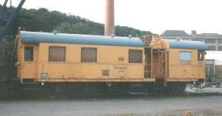
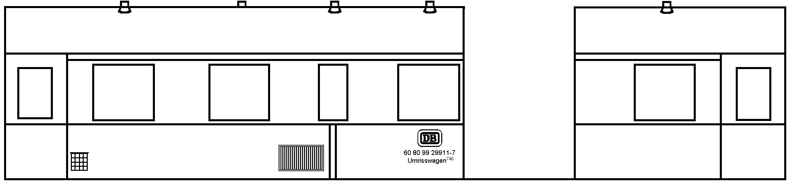
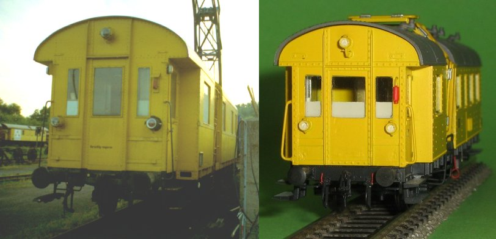
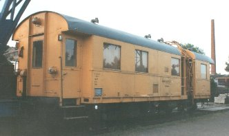
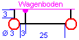
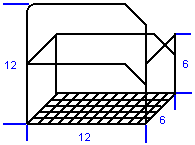
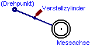
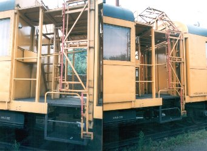
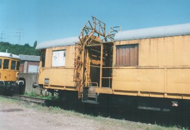

Krümelbahn
Krümelbahn Umrissmesswagen746
Umrissmesswagen746
 Umrisswagen746
Umrisswagen746
Umrisswagen746 (60 80 99 29 911-7) im Eisenbahnmuseum Bochum-Dahlhausen [15-6-96]

Allgemeine Informationen
Auf dieses Fahrzeug aufmerksam geworden bin ich durch zwei Fotografien in den Zeitschriften- Eisenbahn-Kurier 7/91 (Seite 6) und dem
- Der Modelleisenbahner 5/94 (Seite 17)
| Abbildung in | Fahrzeug Nr. |
|---|---|
| Eisenbahn-Kurier 7/91 | 60 80 99 29911-7 |
| Der Modelleisenbahner 5/94 | 60 80 99 29912-5 |
| Miba-Report Dienstfahrzeuge 1 | 60 80 99 29911-7 |
Ein ähnliches Fahrzeug ist der "Tunneligel", ein Triebwagen der Baureihe VT137 158 (712 001-7), der heute im Eisenbahnmuseum Bochum-Dahlhausen zu sehen ist.
Ausgehend von den beiden Aufnahmen versuchte ich dann, das Gerüst im hinteren Drittel des Fahrzeuges sinngemäß nachzubauen.
Als das Modell fertig war, begegnete mir der im EK vorgestellte Wagen im Eisenbahnmuseum Bochum-Dahlhausen.

;){kind=link}
Technische Daten
| Maße in H0 | ||
|---|---|---|
| Dienstmasse | 21,1t | |
| Spurweite | 1435mm | 16,5mm |
| Achsanordnung | 2 | |
| Länge über Puffer | 14040mm | 161,4mm |
| Achsstand | 8500mm | 97,7mm |
| Raddurchmesser | 1000mm | 11,5mm |
Literaturhinweise
Erwähnt wird der Umrissmesswagen in:- Miba-Report Dienstfahrzeuge 1 (Seite 52ff.): Prüfwagen für vielfältige Aufgaben
| Links |
Drehscheibe-Online |
|---|
Bauteilliste
| Stückzahl | Benennung | Best.Nr. | weitere Angaben |
|---|---|---|---|
| 1 | Bi29 | Roco 44212 | |
| 2 | Radsätze RP25 | Roco 40264 | 11,5mm |
| 4 | Federpuffer | Weinert 8614 | (4erPack) |
| 1 | Lampensatz | Weinert 9002 | |
| 6 | Luftsauger Bauart Wendler | Weinert 8955 | (10erPack) |
| 1 | Güterwagenzurüstteile | Weinert 9254 | Pufferbohle, Pufferplatten, Zettelkasten |
| 2 | Bremsschläuche glatt | Weinert 8290 | (4erPack) |
| 1 | Hakenkupplung | Weinert 8648 | (2erPack) |
| 2 | Steckdosen | Spieth Z5 | (8 Lampen und 8 Steckdosen) |
| 1 | Radsatz | Spur N | Messachse unter dem Wagen |
| 1 | Kunststoffplatte 1mm | neue Trennwände, Fenster, Lüftungsgitter | |
| 1 | Leiter | Preiser 1013 | |
| Messingprofil | U-Form: 2*1mm; L-Form: 1*1mm | ||
| Messingprofil | Rundstab: 0,3mm, 0,5mm und 1mm |
Baubeschreibung
 Lademaß
Lademaß
;){kind=link}
 Lademaß
Lademaßin Betrieb seit: 06.1993
Ausgehend von zwei Aufnahmen in den Modellbahnmagazinen und der Kenntnis der Funktionsweise wurde versucht, den Umrissmesswagen nachzuempfinden.
Gehäuseumbau
Zunächst wird der Wagen komplett in seine Einzelteile (Dach, Gehäuse, Fenster, Fahrwerk) zerlegt. Jetzt kann bequem die komplette Beschriftung entfernt werden, diese wird nicht mehr benötigt. Da die Anordnung der Dachlüfter nicht richtig ist, wird dies korrigiert: dazu wird das Dach um 180° gedreht und das mittlere der drei Lüfterlöcher - auf der Seite mit drei Lüftern - verschlossen (es wird nicht benötigt). Damit das Dach wieder montiert werden kann, müssen die mittleren Befestigungsnasen entfernt werden. Jetzt wird das Dach wieder montiert und die Schnittstellen am Gehäuse markiert:
Hierbei bleiben die beiden Nietenreihen neben der Trennstelle erhalten.
Anschließend werden die offenen Wagenkastenenden ebenso mit einer Kunststoffplatte verschlossen, wie die beiden Toilettenfenster. In die beiden Wagenkastenenden wird je eine Türöffnung geschnitten:
- im langen Wagenkasten an der rechten Seite und
- im kurzen Wagenkasten in der Mitte
Am kurzen Wagenkastenende wird die Handbremse entfernt, die Fensteröffnung des Mittleren Fensters vergrößert und alle überflüssigen Löcher verschlossen. Jetzt können die Lampen und eine Steckdose ebenso montiert werden wie die Griffstangen, die aus 0,3mm Messingdraht gebogen werden. Das Resultat sollte jetzt ähnlich dem
Bild aussehen.Bild aussehen.;){kind=link}

Auf die ähnliche Art und Weise wird die andere Stirnseite geändert: Hier bleibt jedoch die Handbremse erhalten, dafür werden die beiden schmalen Fenster verschlossen. Das Resultat sollte jetzt ähnlich dem
Bild aussehenBild aussehen.;){kind=link}

Am langen Wagenkasten können jetzt neben der Einstiegstüre die Zettelkästen geklebt werden; die Lüftergitter werden aus Kunststoff gefertigt: dazu können z.B. zwei 7*4mm große Plättchen benutzt werden. In diese werden mit einem scharfen Messer senkrechte Schnitte eingebracht, die leicht abgehoben werden und somit Lüftungsschlitze andeuten. Ebenso werden die beiden Toilettenfenster mit einer Kunststoffplatte verschlossen.
Die Fenster am kurzen Wagenkasten werden auf halber Höhe mit weißer Farbe hinterlegt; die Fenster am langen Wagenkasten können mit einem Stück braunen Krepppapier hinterlegt; dies imitiert recht gut die Vorhänge.
Fahrgestell
Das Fahrgestell erfährt im wesentlichen drei Änderungen:- es wird am Bremsventil in der Nähe des Batteriekastens ein Bremsgestänge ("Lösezug") aus 0,3mm Messingdraht montiert

- am Ende des kurzen Wagenkastens werden links und rechts je ein Trittgestell aus 0,3mm Messingdraht gefertigt, befestigt. (Das Trittgitter kann aus Messingdraht selbst gefertigt oder von Weinert -9337- bezogen werden.)

- zwischen den Trittgestellen wird aus dem Spur N-Radsatz eine Messachse gefertigt. Dazu muss die Achse verlängert werden. Diese Messachse hängt an einem Drehpunkt unter dem Wagenboden und kann mit einem Zylinder abgesenkt werden

.
Messgestell
Einen guten Überblick bietet ein Foto desMessgerüstes;){kind=link}

Messgerüstes, dieses besteht im wesentlichen aus zwei Teilen:
- der Arbeitsbühne am langen Wagenkasten und
- den ausklapp- bzw. ausfahrbare Lehren am kurzen Wagenkasten
;){kind=link}
